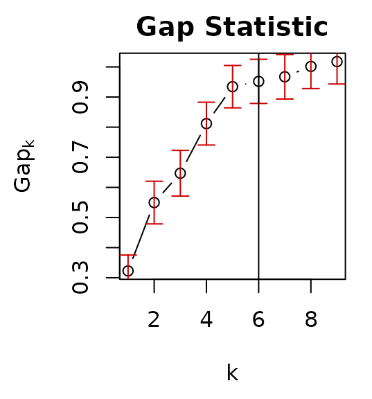
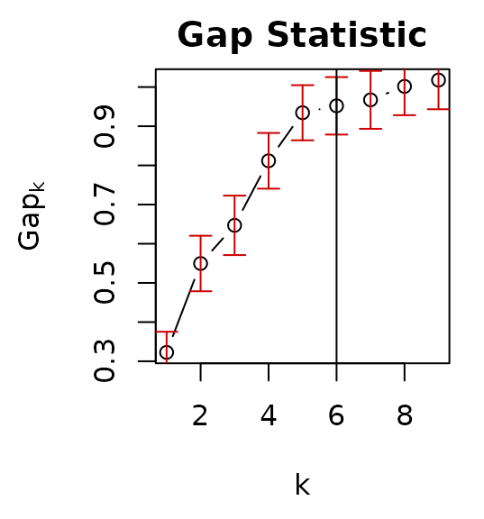
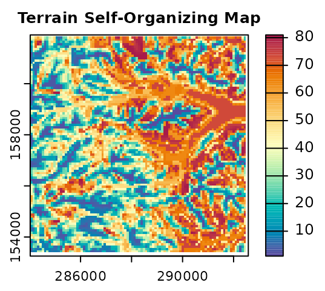

Classification Units
rassta: Raster-based Spatial Stratification Algorithms
Source:vignettes/classunits.Rmd
classunits.RmdGet the data required for this vignette
# Compressed folder with files from rassta’s installation folder
wasoil <- system.file("exdat/wasoil.zip", package = "rassta")
# Directory for temporary files
o <- tempdir()
# Copy compressed folder to directory for temporary files
file.copy(from = wasoil, to = o)
#> [1] TRUE
# Extract files to subfolder
d <- paste(o, "/rassta", sep = "")
unzip(paste(o, "/wasoil.zip", sep = ""), exdir = d)Classification units are first-level spatial entities that result from the stratification of a landscape factor represented by n variables(s). One example of a landscape factor is climate, which can be represented by variables such as mean annual temperature or total annual precipitation. Accordingly, climatic classification units can result from the spatial stratification of temperature and precipitation through methods such as (bio)climatic classification schemes, cluster analysis, etc. Currently, rassta allows the creation of classification units based on dimension reduction and cluster analysis.
Dimension reduction and estimation of k
The process to create classification units starts with the reduction of the feature space represented by n variables. This low-dimension representation of the feature space is created using the self-organizing map (SOM) technique of Kohonen (1982, 1990). Subsequently, cluster analysis is performed on the reduced feature space using the partitioning around medoids (PAM) algorithm (Kaufman and Rousseeuw, 1990). The ‘optimal’ number of clusters k is estimated with the gap statistic of Tibshirani et al. (2001). The packages kohonen (Wehrens and Kruisselbrink, 2018) and cluster (Maechler et al., 2021) are imported by rassta to perform the SOM technique and the PAM clustering with gap statistic, respectively.
The following code examples demonstrate how to reduce the feature space and estimate the optimum k using four terrain variables and the function som_gap.
# Load rassta and terra packages
library(rassta)
library(terra)
# Multi-layer SpatRaster with 4 terrain variables
var <- c("height.tif", "midslope.tif", "slope.tif", "wetness.tif")
vardir <- paste(d, var, sep = "/")
terr.var <- rast(vardir)
# Plot terrain variables
par(mfrow = c(2,2))
nc <- c("Zissou", "Batlow", "Lajolla", "Spectral")
for(i in 1:4){
plot(terr.var[[i]], main = names(terr.var)[i],
col = hcl.colors(100, nc[i]), mar = c(2, 2, 2, 3.5)
)
}
# Set seed
set.seed(963)
# Scale variables to mean = 0 and standard deviation = 1
terr.varscale <- scale(terr.var)
# With terra::aggregate(), reduce spatial resolution to reduce computing time
terr.varscale <- aggregate(terr.varscale, fact = 3)
# Dimensionality reduction and estimation of optimum k (max k to evaluate: 9)
terr.som <- som_gap(terr.varscale, xdim = 9, ydim = 9, K.max = 9)
# Plot results
plot(terr.som$SOM, main = "SOM Codes") # Self-Organizing Map's codes
par(mar = c(4.5, 4.5, 2, 1))
plot(terr.som$SOMgap, main = "Gap Statistic") # Gap statistic
abline(v = terr.som$Kopt) # Optimum k 

Rasterization of the SOM and PAM outputs
Once the feature space has been reduced and the optimum k has been estimated with som_gap, rasterized versions of the SOM and PAM outputs can be created with the function som_pam. The rasterized PAM represents the final set of classification units for a landscape factor. Note that any other clustering algorithm outside of rassta can be used to create classification units from the output SOM of som_gap.
The code below demonstrates the creation of classification units with som_pam.
# Create reference SpatRaster
rastref <- aggregate(terr.var[[1]], fact = 3)
# Rasterization of terrain SOM grid and terrain PAM clustering
terr.sompam <- som_pam(ref.rast = rastref, kohsom = terr.som$SOM,
k = terr.som$Kopt
)
# Plot results
plot(terr.sompam$sompam.rast[[1]], main = "Terrain Self-Organizing Map",
mar = c(1.5, 1.3, 1.5, 3.3), col = hcl.colors(100, "spectral", rev = TRUE)
)
plot(terr.sompam$sompam.rast[[2]], main = "Terrain Classification Units",
type = "classes", col = hcl.colors(terr.som$Kopt, "spectral", rev = TRUE),
mar = c(1.5, 2, 1.5, 2.5)
)
Reclassification
Note that using terra, the numeric IDs of classification units can be reassigned according to the interpretation of each unit. The assignment of new IDs for classes is commonly referred to as ‘reclassification’ in the geospatial analysis literature. In the next code example, the numeric ID of the terrain classification units are reassigned based on the variable height. Terrain classes at higher relative positions (e.g., summits) will have values closer to one. Conversely, terrain classes at lower relative positions (e.g., stream channels) will have values closer to 6.
# Extract rasterized PAM solution
terr.cu <- terr.sompam$sompam.rast[[2]]
# With terra::zonal(), unit-wise mean value of terrain height
terrh <- aggregate(terr.var$height, fact = 3) # Match spatial resolution
terr.stat <- zonal(terrh, terr.cu, fun = mean)
# Order numeric IDs based on terrain height (descending)
terr.stat <- terr.stat[order(terr.stat$height, decreasing = TRUE), ]
# Column with original numeric IDs
terr.stat$CU <- seq(1, terr.som$Kopt)
# With terra::classify(), reclassify numeric IDs
terr.cu <- classify(terr.cu, terr.stat[, c(1,3)])
# Plot original and reclassified terrain classification units
plot(terr.sompam$sompam.rast[[2]], main = "Terrain Classification Units",
type = "classes", col = hcl.colors(terr.som$Kopt, "spectral", rev = TRUE),
mar = c(1.5, 2, 1.5, 2.5)
)
plot(terr.cu, type = "classes", col = hcl.colors(terr.som$Kopt, "spectral"),
main = "Reclassified Terrain Classification Units",
mar = c(1.5, 2, 1.5, 2.5)
)
Clean files from temporary directory
References
B.A. Fuentes, M.J. Dorantes, and J.R. Tipton. rassta: Raster-based Spatial Stratification Algorithms. EarthArXiv, 2021. https://doi.org/10.31223/X50S57
L. Kaufman and P. Rousseeuw. Finding groups in data: an introduction to cluster analysis. John Wiley & Sons, 1990. https://doi.org/10.1002/9780470316801
T. Kohonen. Self-organized formation of topologically correct feature maps. Biological Cybernetics, 43 (1):59–69, 1982. https://doi.org/10.1007/bf00337288
T. Kohonen. The self-organizing map. Proceedings of the IEEE, 1990. https://doi.org/10.1016/s0925-2312(98)00030-7
M. Maechler, P. Rousseeuw, A. Struyf, M. Hubert, and K. Hornik. cluster: Cluster Analysis Basics and Extensions. R package version 2.1.2, 2021. https://CRAN.R-project.org/package=cluster
R. Tibshirani, G. Walther, and T. Hastie. Estimating the number of clusters in a data set via the gap statistic. Journal of the Royal Statistical Society: Series B (Statistical Methodology), 63(2):411–423, 2001. https://doi.org/10.1111/1467-9868.00293
R. Wehrens and J. Kruisselbrink. Flexible self-organizing maps in kohonen 3.0. Journal of Statistical Software, 87(1):1–18, 2018. https://doi.org/10.18637/jss.v087.i07